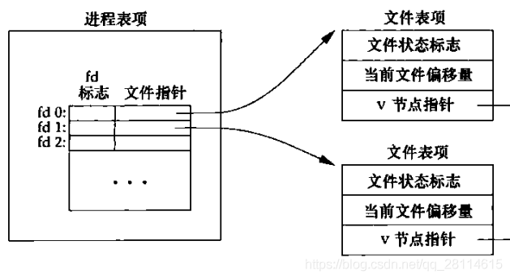

Linux文件描述符的使用与实现
什么是文件描述符
简介
文件描述符在形式上是一个非负整数。实际上，它是一个索引值，指向内核为每一个进程所维护的该进程打开文件的记录表。当程序打开一个现有文件或者创建一个新文件时，内核向进程返回一个文件描述符。在程序设计程序设计)中，一些涉及底层的程序编写往往会围绕着文件描述符展开。但是文件描述符这一概念往往只适用于UNIX、Linux这样的操作系统。
每个Unix进程（除了可能的守护进程）应均有三个标准的POSIX文件描述符，对应于三个标准流：
| 整数值 | 名称 | 符号常量 | 文件流 |
|---|---|---|---|
| 0 | Standard input | STDIN_FILENO | stdin |
| 1 | Standard output | STDOUT_FILENO | stdout |
| 2 | Standard error | STDERR_FILENO | stderr |
文件描述符的优点主要有两个：
- 基于文件描述符的I/O操作兼容POSIX标准。
- 在UNIX、Linux的系统调用中，大量的系统调用都是依赖于文件描述符。
例如，下面的代码就示范了如何基于文件描述符来读取当前目录下的一个指定文件，并把文件内容打印至Console中。
1 |
|
与文件描述符相关的操作
文件描述符的生成
- open(), open64(), creat(), creat64()
- socket()
- socketpair()
- pipe()
与单一文件描述符相关的操作
- read(), write()
- recv(), send()
- recvmsg(), sendmsg()
- sendfile()
- lseek(), lseek64()
- fstat(), fstat64()
- fchmod()
- fchown()
与复数文件描述符相关的操作
- select(), pselect()
- poll(),epoll()
与文件描述符表相关的操作
- close()
- dup()
- dup2()
- fcntl (F_DUPFD)
- fcntl (F_GETFD and F_SETFD)
改变进程状态的操作
- fchdir()
- mmap()
与文件加锁的操作
- flock()
- fcntl (F_GETLK, F_SETLK and F_SETLKW)
- lockf()
与套接字相关的操作
- connect()
- bind()
- listen()
- accept()
- getsockname()
- getpeername()
- getsockopt(), setsockopt()
- shutdown()
文件描述符的实现
在内核中每一个打开的文件都需要由3种数据结构来进行维护。
根据文中内容，这三种数据结构分别为：
进程级：每个进程对应一张打开文件描述符表，这是进程级数据结构，也就是每一个进程都各自有这样一个数据结构；
内核级：内核维持一张打开文件表，文件表由多个文件表项组成，这是系统级数据结构，也就是说这样的数据结构是针对于整个内核而言的，每个进程都可共享的；
系统级：每个打开的文件对应一个i节点（i-node）数据结构（Linux下只有i节点没有v节点），由于这是每一个打开的文件与之对应的，因此这也是一个系统级数据结构，存在于内核中，非进程所独有。
那么，这三种数据结构到底是什么呢？
文件描述符表
在Linux中，对于每一个进程，都会分配一个PCB数据结构，它其中包含了该进程的所有信息，而在代码实现上，这个数据结构名为task_struct，在linux源码的include/linux/sched.h中可以找到其定义，它是一个很庞大的结构体，部分定义如下：
1 | struct task_struct { |
在task_struct中，有一个成员变量名为files，注释中提到这是一个描述打开文件信息的变量，其类型为struct files_struct *，那么现在再接着看files_struct，在linux源码的include/linux/fdtable.h中可以找到其定义，定义如下：
1 | struct files_struct { |
而这里所要找到的打开文件描述符表，实际上就是files_struct 中的成员struct file * fd_array[NR_OPEN_DEFAULT]它是一个指针数组，数组每一个元素都是一个指向file类型的指针，可想而知，这些指针都会指向一个打开的文件，并且file这一数据结构就是用来描述一个打开的文件的，而我们所说的文件描述符，实际上就是这个指针数组的索引。这也是为什么文件描述符是非负整数。
文件表项
前面说了，每一个打开文件实际上就是用一个file结构体进行描述的，在linux源码的include/linux/fs.h中可以找到其定义，定义如下:
1 | struct file { |
在file结构体中，不得不再说一下它的f_path成员，这是一个struct path类型的变量，该类型定义于include/linux/path.h：
1 | struct path { |
这里的dentry实际上就指向文件所在的目录项了，struct dentry的类型定义于include/linux/dcache.h：
1 | struct dentry { |
在dentry结构体中，描述了根结点、父节点等等信息，尤其还要注意的是struct inode *d_inode这一变量，它则是指向了一个i-node结点。
再回到file结构体中，有一个struct file_operations *f_op变量，其类型定义在include/linux/fs.h中：
1 | struct file_operations { |
可见，在该成员中包含了所有文件操作相关的函数指针。
每一个打开的文件都对应于一个file结构体，在该结构体中，f_flags描述了文件标志，f_pos描述了文件的偏移位置，而在f_path中有含有一个指向一个inode结点的指针。
因此可以知道，文件表项的数据结构就是file结构体，而在实际上内核中也并不存在这样一张文件表，只是每个打开的文件都对应一个file结构体，也就是一个文件表项，**打开文件描述符表struct file fd_array[NR_OPEN_DEFAULT]**数组中的每一项都会指向这样一个文件表项，如下图所示：
Inode
第三种数据结构就是inode节点，在include/linux/fs.h中找到其定义如下：
1 | struct inode { |
代码中只注释了一部分，通过inode结构，可以知道文件数据块的在磁盘上的位置以及文件大小等信息，这样才能使得进程能够通过file结构体来找到磁盘上相应文件的位置来进行文件读写。
另外补充一点，关于inode结构体中的struct inode_operations *i_op成员，其数据结构定义在include/linux/fs.h中：
1 | struct inode_operations { |
可见，在该成员变量所指向的数据结构中，包含了许多函数指针，这些函数指针大多针对于目录、文件操作。
总结
进程、打开文件描述符表、文件表项和i-node结点关系如图所示。（暂时忽略进程中0、1和2号文件描述符分别默认为标准输入、标准输出和标准错误的情况）

通过以上分析，我们可以得出以下结论：
每启动一个进程都会为其分配一个
task_struct结构体，在task_struct结构体中含有一个file_struct结构体指针，其所指向的file_struct结构体中，含有一个file的指针数组fd_array,它就是打开文件描述符表，其中每一个元素都指向一个文件表项，这个数组的索引就是文件描述符。此外，file_struct结构体中的next_fd保存的是下一个分配的文件描述符，它会在调用open和close改变，最终使得每次open返回的都是当前可用的最小文件描述符；每次调用open或者create(内部实际上还是调用的open)，都会对新打开的文件分配一个file结构体，并且将打开文件的标志、状态、权限等信息填入这个file结构体中。这个file结构体也叫文件表项；
磁盘中的每个文件都对应一个i-node，每一个文件表项都会指向一个文件的i-node，但是同一文件的i-node可以对应多个文件表项（当多次调用open打开同一个文件时就会出现这种情况，不管是同一进程多次打开同一文件（如图中A进程的0号和2号文件描述符对应两个文件表项，但是最终指向同一i-node即同一文件），还是不同进程多次打开同一文件（如图中A进程3号文件描述符和B进程的3号文件描述符））；
同一进程下的不同文件描述符是可以指向同一文件表项，即最终指向同一文件（如图中A进程的0号文件描述符和1号文件描述符，使用dup函数即可实现）。
子进程在创建时会拷贝父进程的打开文件描述符表，因此父子进程是共享文件表项的。而相互独立的不同进程的打开文件描述符表是相互独立的，因此相互独立的多个进程之间的文件描述符可以相同，但是不同进程的文件描述符是不能指向同一文件表项的（除非这个文件描述符是从同一个祖先进程中继承得来的），但是这并不妨碍不同进程访问同一文件（如第3点结论）；
指向同一文件表项的不同文件描述符（不同进程相同数值的文件描述符也看做不同）共享文件标志、文件偏移等信息；
每一个文件表项对应的file结构体中的
f_count会记录通过该文件表项打开文件的次数，当f_count计数归0时这个文件表项才会被删除，因此，对于指向同一文件表项的两个不同文件描述符（如子进程所继承的父进程的文件描述符，或同一进程中dup的两个文件描述符指向同一个文件表项），即使其中一个文件描述符关闭了，只要仍然有文件描述符指向这个文件表项，那么就依然能通过这个文件表项访问文件，直到所有指向该文件表项的文件描述符都关闭了才不能再进行访问；
参考链接